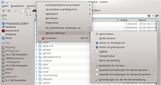
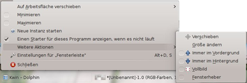
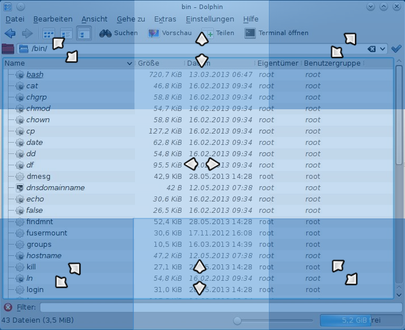
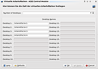
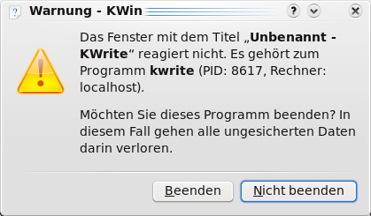

KWin
Dieser Artikel wurde für die folgenden Ubuntu-Versionen getestet:
Ubuntu 14.04 Trusty Tahr
Zum Verständnis dieses Artikels sind folgende Seiten hilfreich:
Ein Terminal öffnen, optional
KWin ist der Fenstermanager der KDE und somit eine der zentralen Anwendungen des KDE Workspaces. KWin verwaltet alle Fenster und Arbeitsflächen inklusive der zugehörigen Tastenkombinationen. Desktopeffekte sind im Fenstermanager integriert, so dass kein zusätzlicher Composition Manager wie Compiz benutzt werden muss. KWin ist dabei sehr stabil und falls er einmal abstürzen sollte, startet er automatisch neu. Man sitzt also nie vor einem unbenutzbaren Bildschirm.
KWin gehört in die Klasse der Überlappenden Fenstermanager, d.h. die Fenster werden übereinander angeordnet. Tabbing und Tiling werden aber ebenfalls unterstützt.
Tastenkürzel¶
 Die folgende Tabelle zeigt eine Übersicht der wichtigsten Tastenkürzel in ihren Standardeinstellungen. Die Tastenkürzel lassen sich über "Systemeinstellungen -> Kurzbefehle und Gestensteuerung -> Globale Kurzbefehle -> KDE-Komponente:KWin" individuell konfigurieren.
Die folgende Tabelle zeigt eine Übersicht der wichtigsten Tastenkürzel in ihren Standardeinstellungen. Die Tastenkürzel lassen sich über "Systemeinstellungen -> Kurzbefehle und Gestensteuerung -> Globale Kurzbefehle -> KDE-Komponente:KWin" individuell konfigurieren.
| KWin Tastenkürzel | |
| Tastenkürzel | Aktion |
| Alt + ⇧ + F12 | Compositing temporär an-/ausschalten. |
| Alt + Tab ⇆ | Durch Fensterliste der aktuellen Arbeitsfläche laufen |
| Alt + ⇧ + Tab ⇆ | Durch Fensterliste in umgekehrter Reihenfolge laufen |
| Strg + F8 | Desktop-Grid-Effekt. Anzeige aller Arbeitsflächen mit der Möglichkeit neue Arbeitsflächen hinzuzufügen oder zu entfernen. Hiermit ist es auch möglich, Fenster von einer Arbeitsfläche auf eine andere zu schieben. |
| Strg + F1 | Auf 1. Arbeitsfläche wechseln |
| Strg + F2 | Auf 2. Arbeitsfläche wechseln |
| Strg + F3 | Auf 3. Arbeitsfläche wechseln |
| Strg + F4 | Auf 4. Arbeitsfläche wechseln |
| Alt + F3 | Fensteraktionen Menü öffnen |
| Alt + F4 | Aktuelles Fenster schließen |
| Strg + Alt + Esc | Dabei wandelt sich der Mauszeiger in einen Totenkopf. Ein Klick auf ein Fenster tötet es (kill). |
| Strg + Alt + A | Zum Fenster wechseln, welches Eingabe erwartet |
| Strg + F9 | Expose Effekt aktivieren |
| Strg + F10 | Exposé Effekt (inklusive Fenster aller Arbeitsflächen) aktivieren |
Fenster verwalten¶
Das Verwalten der Fenster kann neben den hier vorgestellten Möglichkeiten auch durch Desktopeffekte beeinflusst werden. So gibt es zum Beispiel alternative Effekte für den Fensterwechsel ( Alt + Tab ⇆ ). Siehe dazu KWin/Arbeitsflächeneffekte.
Menüs¶
|  |  |
| Kontextmenü der Titelleiste | Kontextmenü in der Fensterleiste |
Viele der vorgestellten Funktionen sind außer über Tastenkombinationen auch über Menüs zu erreichen:
Rechtsklick
 auf die Titelleiste, oder
Alt +
F3
auf die Titelleiste, oder
Alt +
F3 Rechtsklick auf den Eintrag in der Fensterleiste
Das Menü, welches man über die Titelleiste oder Alt + F3 erreicht, bietet gegenüber dem Menü der Fensterleiste ein paar Optionen mehr.
Knöpfe der Standardtitelleiste¶
|  |
| Knöpfe der Titelleiste |
Auf der Titelleiste des Standardthemas Oxygen befinden sich die üblichen Knöpfe (von links nach Rechts):
"Fenstermenü" - Dargestellt mit dem Symbol der Anwendung. Hier lässt lässt sich das Titelleistenmenü auch mit einem
 öffnen.
öffnen."Auf allen Arbeitsflächen" - Lässt das Fenster auf allen Arbeitsflächen erscheinen.
"Minimieren" - Lässt das Fenster verschwinden. Hervorholen kann man es über die Fensterleiste in der Kontrollleiste oder über die Fensterliste Alt + Tab ⇆
"Maximieren" - Mit diesem Knopf kann die Größe des Fensters unterschiedlich beeinflusst werden. Siehe Größe ändern.
"Schließen" - Schließt das Fenster und die Anwendung.
Die Knöpfe können individuell an eigene Bedürfnisse angepasst werden. Die entsprechenden Einstellungen dazu findet man unter "Systemeinstellungen -> Erscheinungsbild der Arbeitsfläche -> Fensterdekoration". Unterhalb der Vorschau befindet sich die Schaltfläche "Knöpfe einrichten".
Größe ändern¶
|  |
| Mausbereiche für die Größenänderung per ALT + rechte Maustaste |
Neben den üblichen Möglichkeiten die Größe eines Fensters über den Rahmen zu ändern, kann die Größe auch durch folgende Aktionen beeinflusst werden:
Alt +
: Je nach Position der Maus (siehe Bild) lässt sich die Größe des Fensters über verschiedene Ecken oder Seiten einstellen.Über den Maximieren-Knopf :
Durch einen Linksklick
-Klick wird das Fenster auf die maximale horizontale und vertikale Größe aufgespannt bzw. auf die vorherige Größe zurückgesetztDurch einen Klick mit der mittleren Maustaste
 wird das Fenster vertikal maximiert
wird das Fenster vertikal maximiertDurch einen Klick mit der rechten Maustaste
wird das Fenster horizontal maximiert. Durch einen Doppelklick mit der linken Maustaste auf die Titelleiste wird das Fenster maximiert bzw. wieder auf die Ursprungsgröße zurück gesetzt.
Verschieben¶
Ein Fenster lässt sich über die Titelleiste verschieben. Dazu klickt man mit der linken Maustaste an eine beliebige Stelle der Titelleiste und bewegt die Maus bei gedrückt gehaltener Maustaste. Sollte man einzelne Bereiche des Fensters nicht erreichen können, weil die Titelleiste an den oberen Rand stößt so kann man auch
Alt + an beliebiger Stelle des Fensters verwenden und durch Bewegen der Maus das Fenster verschieben. Eine weitere Möglichkeit besteht in der Verwendung des Desktop-Grid-Effekts oder des Arbeitsflächen-Umschalters, welche auch das Verschieben der Fenster ermöglichen.
Auch über das Fensteraktionen-Menü ( Alt + F3 bzw. Kontextmenü der Titelleiste oder des Fensterleisteneintrages) kann mittels des Menüpunkts "Weitere Aktionen -> Verschieben" das Fenster verschoben werden. Dabei verschieben Mausbewegungen so lange das Fenster, bis der Vorgang über ein Ereignis wie einen Mausklick oder der Taste ⏎ abgebrochen wird.
Aktive Fenster wechseln¶
Mittels der Tastenkombination Alt + Tab ⇆ bzw. Alt + ⇧ + Tab ⇆ kann durch die Fensterliste navigiert werden. Durch jeweils erneutes Drücken der Tab ⇆ wird der nächste Eintrag in der Fensterliste ausgewählt. Besonders interessant ist, dass man auch die Maus verwenden kann, um ein Fenster in der Liste auszuwählen.
Besondere Funktionen¶
Über die Menüs lassen sich besondere Funktionen über den Eintrag "Weitere Aktionen" erreichen:
"Fensterheber" - Die Funktion Fensterheber reduziert ein Fenster auf die Titelleiste. Für manche Fensterdekorationen lässt sich ein Knopf für den Fensterheber in der Titelseite einrichten. Siehe dazu Knöpfe der Titelleiste.
"Fenster immer im Vordergrund/Hintergrund" - KWin kann ein Fenster immer in den Vordergrund/Hintergrund versetzen. Das bedeutet, dass das Fenster immer andere Fenster überdeckt bzw. von anderen Fenstern überdeckt wird, egal welches Fenster gerade aktiviert ist.
"Fenster auf andere Arbeitsfläche verschieben" - Hiermit lassen sich einzelne Fenster auf eine andere Arbeitsfläche verschieben. Alternative Möglichkeiten für diese Aktion:
Bei aktivierten Arbeitsflächenrändern ("Systemeinstellungen -> Verhalten der Arbeitsfläche -> Bildschirmränder") kann man das Fenster auch mittels Verschieben auf eine andere Arbeitsfläche verschieben.
Alternativ lässt sich auch der Desktop-Grid-Effekt ( Strg + F8 ) verwenden
Über die Piktogramme im Arbeitsflächen-Umschalter in der Kontrollleiste.
Virtuelle Arbeitsflächen¶
Wie bereits erwähnt, ist KWin auch für die Verwaltung der virtuellen Arbeitsflächen zuständig. Es gibt standardmäßig zwei virtuelle Arbeitsflächen. Zwischen den Arbeitsflächen lässt sich mit den Tastenkürzeln Strg + F1 bis Strg + F4 (je nach Anzahl) wechseln oder über den Arbeitsflächen-Umschalter. Sofern konfiguriert kann man auch die Aktiven Arbeitsflächenränder verwenden um die Arbeitsfläche zu wechseln.
Über den Desktop Grid Effekt (Tastenkürzel Strg + F8 ) kann man ebenfalls die Arbeitsfläche wechseln. Man erhält hiermit auch einen guten Überblick über alle Arbeitsflächen und kann auch Fenster auf eine andere Arbeitsfläche verschieben. Mit dem Arbeitsflächenwürfel (so fern aktiviert) steht ein weiterer Effekt zur Verfügung um die Arbeitsfläche zu wechseln.
 Die Anzahl der virtuellen Arbeitsflächen kann man über folgende Möglichkeiten einstellen:
Menü Systemeinstellungen -> Verhalten der Arbeitsfläche -> Virtuelle Arbeitsflächen
Kontextmenü des Arbeitsflächen-Umschalters (in der Kontrolleiste)
Über beide Varianten lassen sich die Anzahl der verfügbaren Arbeitsflächen einstellen und Namen für die einzelnen Arbeitsflächen vergeben werden.
Nicht mehr reagierende Programme beenden¶
KWin ist in der Lage zu erkennen, ob ein Programm nicht mehr reagiert. Wenn KWin ein solches Programm bemerkt, bietet es dem Anwender über ein Dialogfenster die Möglichkeit die Anwendung sofort zu beenden. 
KWin braucht jedoch einige Zeit um festzustellen, ob eine Anwendung nicht mehr reagiert. Daher gibt es mit dem Tastenkürzel Strg + Alt + Esc die Möglichkeit, ein beliebiges Fenster zu beenden. Nach Drücken des Tastenkürzels wird xkill gestartet und der Mauszeiger verändert sich. Klickt man nun auf ein Fenster, so wird dieses beendet. Möchte man doch kein Fenster schließen, so kann man mit Esc den Vorgang abbrechen.
Konfiguration¶
Wie bereits erwähnt, ist KWin extrem konfigurierbar. Jedes Detail des Fenstermanagers lässt sich beeinflussen. Alle Möglichkeiten sind in der Regel gut beschrieben jedoch manchmal etwas schwer zu finden. Am einfachsten erreicht man alle Einstellungen über das Kontextmenü des Fensters (siehe Menüs) unter dem Eintrag "Weitere Aktionen -> Einstellungen für die Fensterverwaltung...". Das so geöffnete Fenster enthält alle Einstellungsmöglichkeiten während die gleichen Möglichkeiten in den "Systemeinstellungen" über mehrere Einträge verstreut liegen.
Die Tabelle zeigt in der ersten Spalte den Namen des Bereichs der über das Fenstermenü und "Weitere Aktionen -> Einstellungen für die Fensterverwaltung..." zu erreichen ist, in der zweiten Spalte das Pendant über die Systemeinstellungen:
| KWin Einstellungen | ||
| Bereich | "Systemeinstellungen" | Konfigurationsoptionen |
| Arbeitsflächen-Effekte | "-> Arbeitsflächen-Effekte" | Komplett Ein/Ausschalten; einzelne Effekte (de-)aktivieren; Effekte einstellen; Einfache Effekt-Einrichtung durch Voreinstellungen |
| Anwendungsumschalter | "-> Fensterverhaten -> Anwedungsumschalter" | Einstellungen zum verhalten bei Alt + Tab ⇆ ; Tastenkürzel ändern; Reihenfolge der Sortierung; ob Fenster aller Arbeitsflächen/Aktivitäten/Bildschirme einbezogen werden |
| Bildschirmränder | "Verhalten der Arbeitsfläche -> Bildschirmränder" | Aktionen beim Verhalten, wenn man mit der Maus an den Bildschirmrand stößt; z.B. Fenster maximieren oder seitlich anordnen; Arbeitsflächenwechsel; Zeiten für die Aktivierung der Aktionen |
| Fensterdekoration | "Erscheinungsbild der Arbeitsfläche -> Fensterdekoration" | Auswahl des Fensterrahmens mit Möglichkeit neue Dekors aus dem Internet zu laden; Rahmen einrichten (z.B.: Rahmengröße, Schatten); Knöpfe der Titelleiste einrichten |
| Aktionen | "Fensterverhalten -> Fensterverhalten" Reiter "Titelleiste" und "Fenster" | Verhalten von Maustasten und Tastatur auf verschiedne Elemente des Fensters einstellen |
| Aktivierung | "Fensterverhalten -> Fensterverhalten" Reiter "Aktivierung" | Aktivierung von Fenstern einstellen |
| Verschieben | "Fensterverhalten -> Fensterverhalten" Reiter "Verschieben" | Optionen für das Verschieben einstellen; Fenstergeometrie dabei anzeigen; Einrastzonen definieren |
| Erweitert | "Fensterverhalten -> Fensterverhalten" Reiter "Erweitert" | Optionn für den Fensterheber (siehe Besondere Funktionen); Gruppierung von Fenstern |
| KWin-Skripte | "Fensterverhalten -> KWin-Skripte" | Ein und Ausschalten von KWin-Skripten mit der Möglichkeit neue Skripte herunter zu laden oder zu Importieren. Mehr zu Kwin-Skripte auf: KDE-Techbase  |
| Fensterregeln | "Fensterverhalten -> Fensterregeln" | Mit den Fensterregeln lassen sich Fenster auf bestimmten Arbeitsflächen/Aktivitäten anzeigen oder sich stets im Vordergrund öffnen. |
Problembehebung¶
KWin neustarten¶
Normalerweise startet sich KWin nach einem Absturz automatisch neu, ohne dass der Anwender etwas davon bemerkt. Manchmal ist es dennoch nötig, KWin manuell neu zu starten, z.B. wenn man Compiz beenden möchte. Dazu kann man KRunner mit Alt + F2 verwenden und folgendem Befehl:
kwin --replace
Sollte überhaupt kein Fenstermanager mehr laufen, so kann KRunner nicht fokussiert werden und der Befehl kann nicht eingegeben werden. In diesem Fall kann man z.B. mit Strg + Alt + F1 auf ein virtuelles Terminal wechseln, sich anmelden und folgenden Befehl verwenden:
DISPLAY=:0 kwin --replace &
Fehlende Fensterdekorationen¶
Sollten alle Fenster ohne Dekorationen (Fensterleiste/Titelleiste und Rahmen) angezeigt werden, dann ist entweder KWin abgestürzt oder es wird Compiz verwendet. Ob ein Absturz vorliegt, lässt sich einfach testen, indem man versucht, zwischen Fenstern zu wechseln. Ist dies nicht möglich, so ist der Fenstermanager abgestürzt und obige Anleitung hilft. Ist der Wechsel zwischen Fenstern noch möglich, so läuft noch ein Fenstermanager (sehr wahrscheinlich Compiz). In diesem Fall folgt man bitte der Anleitung Compiz Problembehebung, falls man Compiz verwenden möchte, falls nicht so startet man wie oben beschrieben KWin neu. Über "Systemeinstellungen → Standardkomponenten → Fenstermanager" kann ein anderer gewählt werden. Dieser Wechsel hat auch schon fehlerhafte Fensterdekorationen in Ordnung gebracht.
Unscharfes Bild mit Desktop-Effekten¶
Wenn unter Kwin das komplette Bild unscharf wird, z.B. wenn man die Desktop-Effekte mit ⇧ + Alt + F12 aus- und wieder anschaltet oder die Bildausgabe auf einen anderen Monitor umschaltet, kann es helfen, in den nvidia-settings unter „Antialiasing Settings“ den Schalter „Enable FXAA“ zu deaktivieren. Nach erneutem aus- und anschalten der Desktop-Effekte sollte das Bild wieder scharf sein.
Weitere Supportinformationen¶
KWin bietet die Möglichkeit, Informationen über KWin und den verwendeten OpenGL-Treiber automatisiert auszulesen. Diese Ausgabe kann für den Support auch hier im Forum sehr sinnvoll sein. Bei Supportanfragen zu KWin daher ein Terminal[1] öffnen und die Ausgabe von
qdbus org.kde.kwin /KWin supportInformation
in einem Codeblock posten.
- Erstellt mit Inyoka
-
 2004 – 2017 ubuntuusers.de • Einige Rechte vorbehalten
2004 – 2017 ubuntuusers.de • Einige Rechte vorbehalten
Lizenz • Kontakt • Datenschutz • Impressum • Serverstatus -
Serverhousing gespendet von